<!DOCTYPE lake>
<h2 data-lake-id="EtcF3" id="EtcF3"><span data-lake-id="uf2c1343e" id="uf2c1343e">目标</span></h2><ul list="u813b28bd"><li data-lake-id="uaa9b1a4f" fid="uaaaaae07" id="uaa9b1a4f"><span data-lake-id="u6a09d80f" id="u6a09d80f">了解C51版本Keil开发环境的概念和用途</span></li><li data-lake-id="u3865741d" fid="uaaaaae07" id="u3865741d"><span data-lake-id="u127403e8" id="u127403e8">掌握C51版本Keil环境的安装和配置方法</span></li><li data-lake-id="u5afa25b7" fid="uaaaaae07" id="u5afa25b7"><span data-lake-id="u0e2d2e9c" id="u0e2d2e9c">熟悉C51版本Keil开发环境的使用</span></li></ul><h2 data-lake-id="pT7RI" id="pT7RI"><span data-lake-id="u83168836" id="u83168836">准备工作</span></h2><ul list="u95bf3727"><li data-lake-id="u462b0815" fid="ubb2219bb" id="u462b0815"><span data-lake-id="udff9b133" id="udff9b133">Windows 操作系统</span></li><li data-lake-id="u60cc92fc" fid="ubb2219bb" id="u60cc92fc"><span data-lake-id="u1e1bec28" id="u1e1bec28">Keil C51 安装包（可以从Keil官网下载）</span></li><li data-lake-id="uef812e31" fid="ubb2219bb" id="uef812e31"><span data-lake-id="ua42f5024" id="ua42f5024">一款8051单片机开发板</span></li><li data-lake-id="u2a63595a" fid="ubb2219bb" id="u2a63595a"><span data-lake-id="u9eebf7de" id="u9eebf7de">CH340驱动</span></li></ul><p data-lake-id="u84d63b9b" id="u84d63b9b"><a class="yuque-card-link" href="../../_assets/b3494c1409037b96aef45021.zip">CH340驱动.zip</a></p><h2 data-lake-id="WEXIz" id="WEXIz"><span data-lake-id="u2cbf678d" id="u2cbf678d">搭建流程</span></h2><p data-lake-id="u2b7da07f" id="u2b7da07f"><span data-lake-id="uda0aae30" id="uda0aae30">环境搭建的基本流程：</span></p><ol list="u7a32ce7d"><li data-lake-id="u818ee171" fid="u81f34842" id="u818ee171"><span data-lake-id="u6fea0a86" id="u6fea0a86">从官方网站下载并安装Keil软件。</span></li><li data-lake-id="uef3ec4fa" fid="u81f34842" id="uef3ec4fa"><span data-lake-id="u3a1d59e9" id="u3a1d59e9">选择安装的软件中的C51工具集并运行。</span></li><li data-lake-id="u732667c0" fid="u81f34842" id="u732667c0"><span data-lake-id="u436ac690" id="u436ac690">通过从“文件”菜单中选择“项目”来创建新项目。</span></li><li data-lake-id="u21c6a50d" fid="u81f34842" id="u21c6a50d"><span data-lake-id="u1389fc27" id="u1389fc27">输入项目名称并选择您正在使用的设备。</span></li><li data-lake-id="u593e6b04" fid="u81f34842" id="u593e6b04"><span data-lake-id="u0bfcc62b" id="u0bfcc62b">通过从“项目”菜单中选择“添加文件到组”来添加源文件。</span></li><li data-lake-id="u8397f831" fid="u81f34842" id="u8397f831"><span data-lake-id="u846ea566" id="u846ea566">通过从“项目”菜单中选择“目标选项”来配置项目。</span></li><li data-lake-id="ucef095e2" fid="u81f34842" id="ucef095e2"><span data-lake-id="u19f8a265" id="u19f8a265">设置目标选项，例如振荡器频率、内存模型和启动代码。</span></li><li data-lake-id="ub620be19" fid="u81f34842" id="ub620be19"><span data-lake-id="u69baaa83" id="u69baaa83">通过从“项目”菜单中选择“生成目标”来构建项目。</span></li><li data-lake-id="ue3337269" fid="u81f34842" id="ue3337269"><span data-lake-id="ua5ece635" id="ua5ece635">使用适当的编程器/调试器将生成的代码下载到目标设备。</span></li><li data-lake-id="ubcfc8f00" fid="u81f34842" id="ubcfc8f00"><span data-lake-id="u96e7c809" id="u96e7c809">运行程序并在必要时调试。</span></li></ol><h2 data-lake-id="XalA4" id="XalA4"><span data-lake-id="ubcd8c477" id="ubcd8c477">下载与安装</span></h2><p data-lake-id="u6854f8a7" id="u6854f8a7"><span data-lake-id="u97e84d47" id="u97e84d47">下载地址是 </span><a data-lake-id="u37d7973b" href="https://www.keil.com/download/product/" id="u37d7973b" rel="noopener noreferrer" target="_blank"><span data-lake-id="u27d48a7e" id="u27d48a7e">https://www.keil.com/download/product/</span></a></p><p data-lake-id="u8eeafc28" id="u8eeafc28"><span data-lake-id="u92683628" id="u92683628">选择C51进行下载：</span></p><p data-lake-id="uf430587e" id="uf430587e">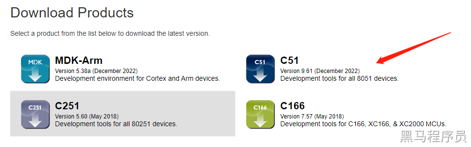</p><p data-lake-id="udd2171df" id="udd2171df"><span data-lake-id="u05aeb5e8" id="u05aeb5e8">安装步骤如下：</span></p><p data-lake-id="u5a689672" id="u5a689672">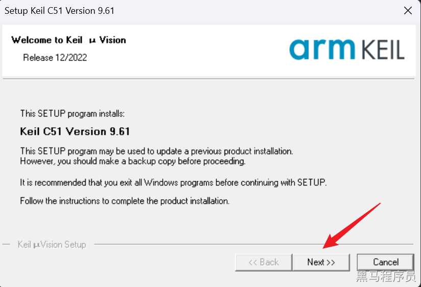</p><p data-lake-id="uf9dc3268" id="uf9dc3268">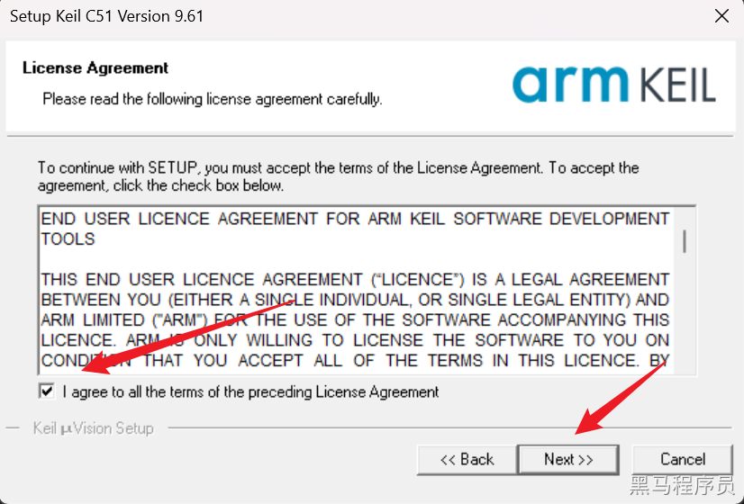</p><p data-lake-id="u359f5e78" id="u359f5e78">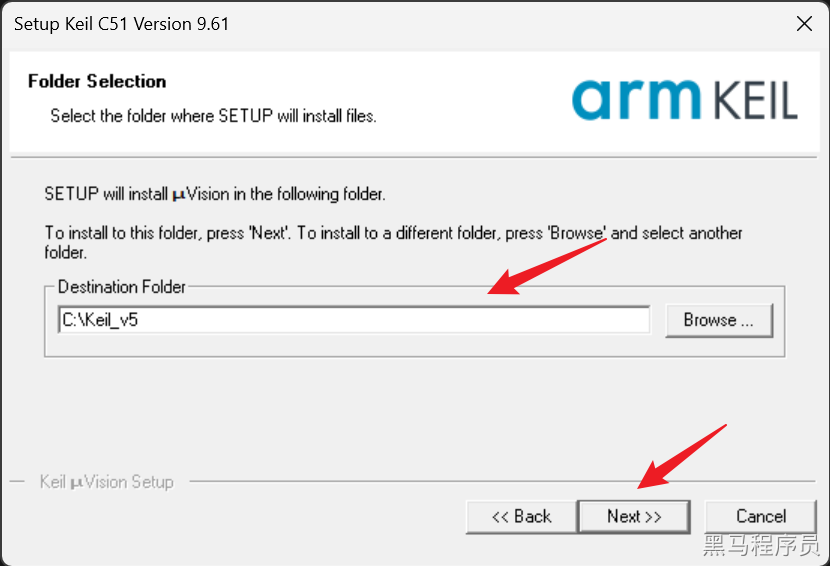</p><p data-lake-id="u7249487a" id="u7249487a">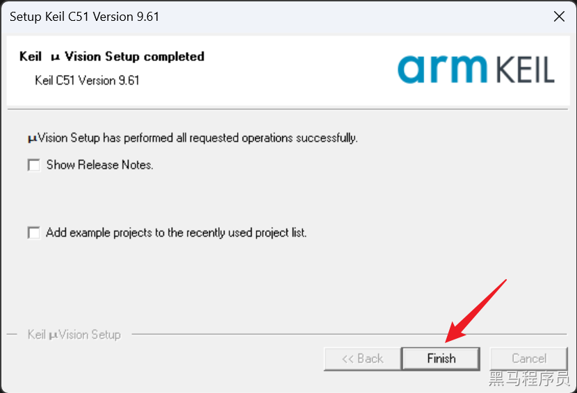</p><p data-lake-id="u5c56aed9" id="u5c56aed9"><span data-lake-id="uca16efb2" id="uca16efb2">安装完成即可</span></p><h2 data-lake-id="WDrxW" id="WDrxW"><span data-lake-id="ufbbebe6f" id="ufbbebe6f">激活</span></h2><p data-lake-id="u71d33010" id="u71d33010"><span data-lake-id="ueee0786d" id="ueee0786d">&gt;&gt;&gt; 以</span><strong><span data-lake-id="u48067cb0" id="u48067cb0">管理员身份</span></strong><span data-lake-id="ue42e6908" id="ue42e6908">打开下载好的 keil软件。&lt;&lt;&lt;</span></p><blockquote class="lake-alert lake-alert-warning" data-lake-id="u8f548f04" id="u8f548f04"><p data-lake-id="u029e3226" id="u029e3226"><span data-lake-id="uec2e8cb0" id="uec2e8cb0">重要的事情说三遍：</span></p><p data-lake-id="u0192932f" id="u0192932f"><span data-lake-id="u3e3eff59" id="u3e3eff59">一定要用</span><strong><span data-lake-id="ueff1b580" id="ueff1b580">管理员身份</span></strong><span data-lake-id="ud57569a0" id="ud57569a0">打开Keil！</span></p><p data-lake-id="u271f9f7c" id="u271f9f7c"><span data-lake-id="udc9ec791" id="udc9ec791">一定要用</span><strong><span data-lake-id="u3f6ea3eb" id="u3f6ea3eb">管理员身份</span></strong><span data-lake-id="u5961964a" id="u5961964a">打开Keil！</span></p><p data-lake-id="u7138364c" id="u7138364c"><span data-lake-id="u20431122" id="u20431122">一定要用</span><strong><span data-lake-id="u7aa18278" id="u7aa18278">管理员身份</span></strong><span data-lake-id="u4f5fe997" id="u4f5fe997">打开Keil！</span></p></blockquote><p data-lake-id="u9aa01577" id="u9aa01577"><span data-lake-id="u5c55d681" id="u5c55d681">打开 File 下的 证书管理</span></p><p data-lake-id="uc19e4604" id="uc19e4604">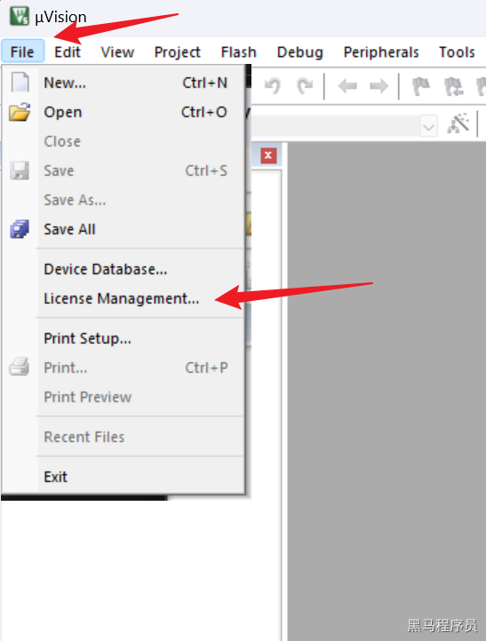</p><p data-lake-id="ua1e26df9" id="ua1e26df9"><br/></p><p data-lake-id="u6c908a6f" id="u6c908a6f"><span data-lake-id="ufa3990cb" id="ufa3990cb">查看CID，用于购买证书</span></p><p data-lake-id="ub7add9cf" id="ub7add9cf">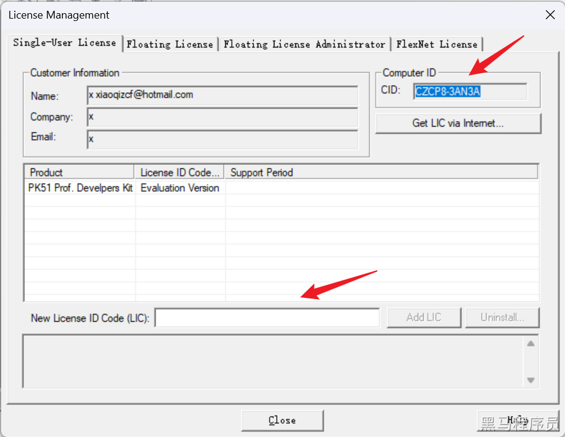</p><p data-lake-id="u617d56c2" id="u617d56c2"><span data-lake-id="ubef1ecfb" id="ubef1ecfb">​</span><br/></p><p data-lake-id="u4261bb8d" id="u4261bb8d"><span data-lake-id="ufdb7c3f3" id="ufdb7c3f3">将从代理商那里购买到的官方证书输入，点击添加</span></p><p data-lake-id="u9ecc2508" id="u9ecc2508">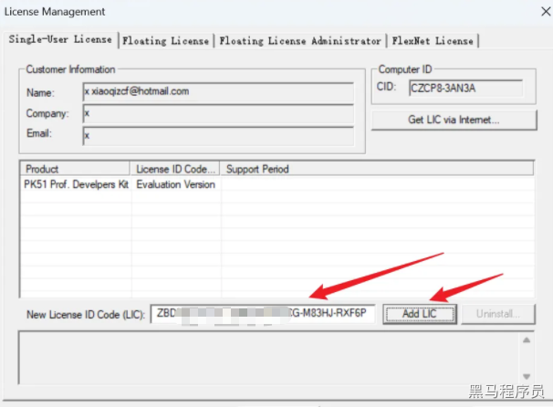</p><p data-lake-id="uad776505" id="uad776505"><span data-lake-id="u0fd30018" id="u0fd30018">添加完成后，激活时效显示如下，说明成功</span></p><p data-lake-id="ud7911528" id="ud7911528">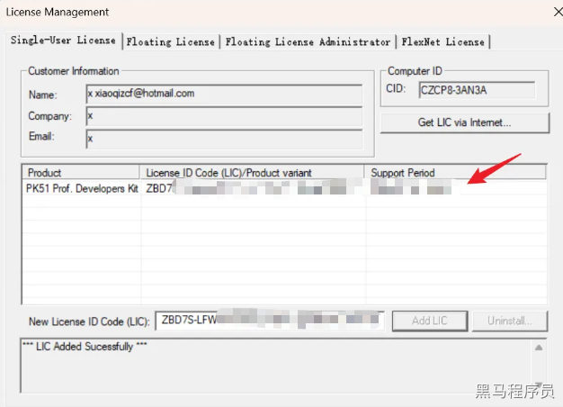</p><h2 data-lake-id="FvVeJ" id="FvVeJ"><span data-lake-id="ua4f25ef6" id="ua4f25ef6">STC环境添加</span></h2><h3 data-lake-id="wgMCd" id="wgMCd"><span data-lake-id="u5e1a363b" id="u5e1a363b">STC-ISP下载</span></h3><p data-lake-id="u020cd793" id="u020cd793"><span data-lake-id="ud17645d2" id="ud17645d2">进入stc官网 </span><a data-lake-id="u79930c82" href="https://www.stcai.com/gjrj" id="u79930c82" rel="noopener noreferrer" target="_blank"><span data-lake-id="u90907c6e" id="u90907c6e">https://www.stcai.com/gjrj</span></a></p><p data-lake-id="ud648be42" id="ud648be42"><code data-lake-id="ube5707d2" id="ube5707d2"><span data-lake-id="u9aa9c48a" id="u9aa9c48a">CTRL + F</span></code><span data-lake-id="u734315e4" id="u734315e4">搜索关键字 </span><code data-lake-id="ufd3fb8fe" id="ufd3fb8fe"><span data-lake-id="u5d5ab09f" id="u5d5ab09f">STCAI-ISP下载</span></code></p><p data-lake-id="u787a6b3f" id="u787a6b3f">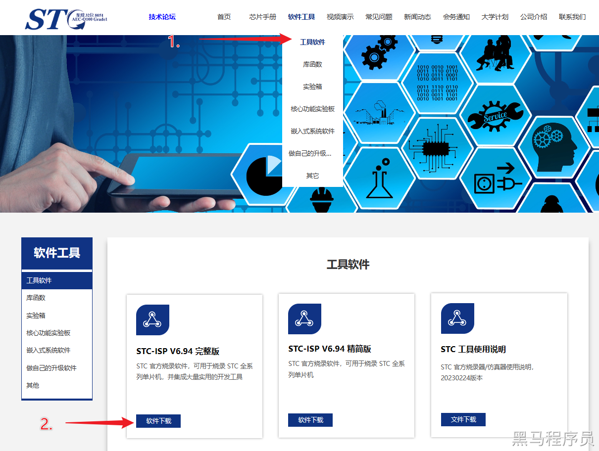</p><p data-lake-id="u9cab57ec" id="u9cab57ec"><span data-lake-id="ueb283536" id="ueb283536">下载最新版本。</span></p><h3 data-lake-id="mz471" id="mz471"><span data-lake-id="u0dc401ef" id="u0dc401ef">将STC添加到Keil中</span></h3><ol list="ubdaf2631"><li data-lake-id="u9c99fddc" fid="ud535d38e" id="u9c99fddc"><span data-lake-id="uec00e3f0" id="uec00e3f0">打开stc-isp工具</span></li><li data-lake-id="uad50be28" fid="ud535d38e" id="uad50be28"><span data-lake-id="u0de47087" id="u0de47087">按照图例点击按钮</span></li></ol><p data-lake-id="udd6d570c" id="udd6d570c" style="padding-left: 2em">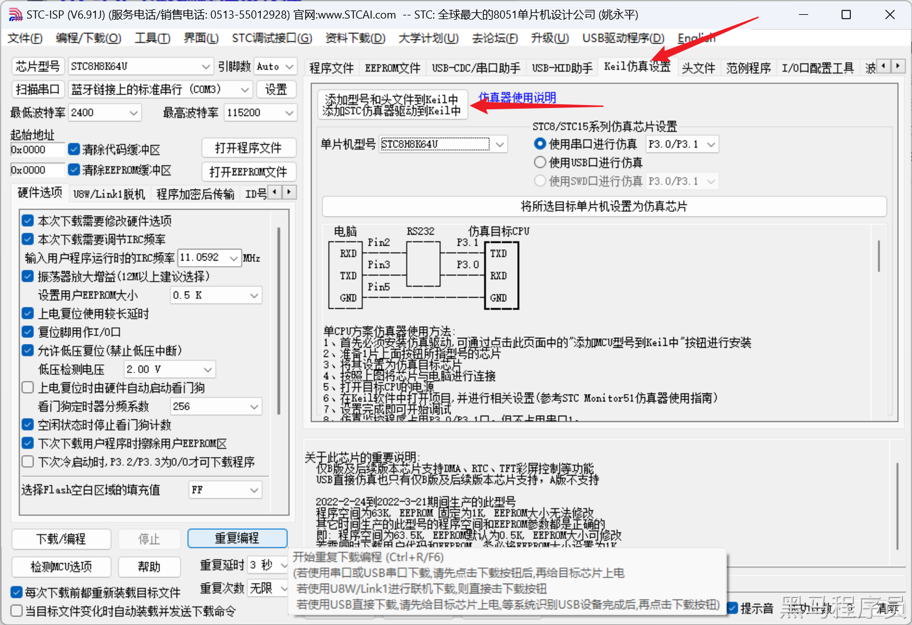</p><ol list="u9ed80730" start="3"><li data-lake-id="u23e34d7f" fid="u3ab6265a" id="u23e34d7f"><span data-lake-id="u7abe8d42" id="u7abe8d42">选择keil的安装目录，以实际安装目录为准</span></li></ol><p data-lake-id="u62cb3f28" id="u62cb3f28" style="padding-left: 2em">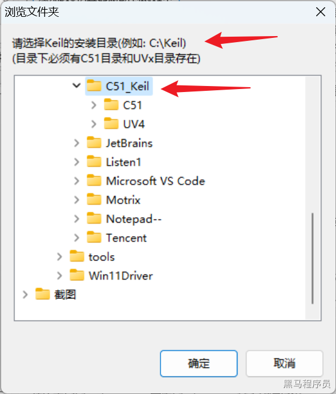</p><p data-lake-id="ue0a24f50" id="ue0a24f50" style="padding-left: 2em"><span data-lake-id="u61c9bd15" id="u61c9bd15">成功后会弹出提示框</span></p><p data-lake-id="ud6788eda" id="ud6788eda" style="padding-left: 2em">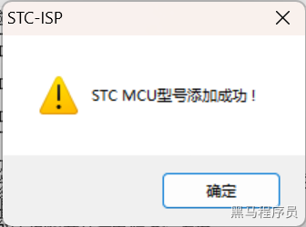</p><p data-lake-id="ub792dc53" id="ub792dc53"><span data-lake-id="udb25daa2" id="udb25daa2">​</span><br/></p><blockquote class="lake-alert lake-alert-warning" data-lake-id="uea74a6e5" id="uea74a6e5"><p data-lake-id="u997a7b05" id="u997a7b05"><span data-lake-id="u07b7ac57" id="u07b7ac57">添加完成后，要关闭当前Keil并重新打开，才能正常加载STC工程开发环境！！！</span></p></blockquote><p data-lake-id="ua8ad5209" id="ua8ad5209" style="padding-left: 2em"><br/></p><h3 data-lake-id="jEzVQ" id="jEzVQ"><span data-lake-id="uc7b3ee5f" id="uc7b3ee5f">校验是否导入STC环境</span></h3><ol list="u054713b9"><li data-lake-id="u37179086" fid="u483883bd" id="u37179086"><span data-lake-id="uf20e37e9" id="uf20e37e9">打开keil软件，新建一个keil项目，选择合适的目录</span></li></ol><p data-lake-id="u72d92ce0" id="u72d92ce0" style="padding-left: 2em">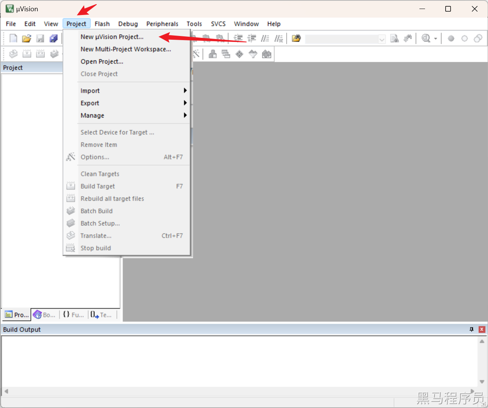</p><p data-lake-id="u73d310a5" id="u73d310a5" style="padding-left: 2em">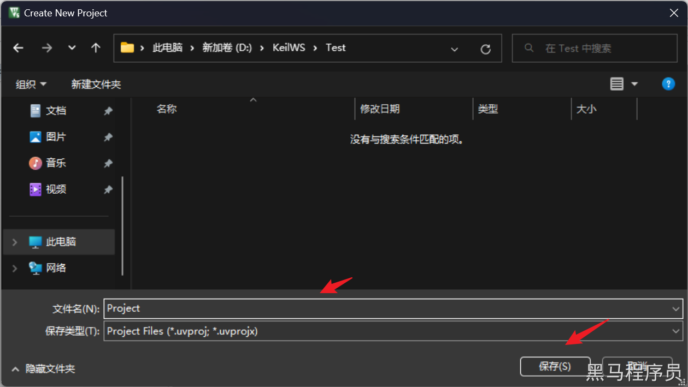</p><ol list="ubb412b66" start="2"><li data-lake-id="ua2c687fe" fid="ub82c86a0" id="ua2c687fe"><span data-lake-id="u88a6464a" id="u88a6464a">点击下拉框中，如果出现STC MCU Database，说明环境导入成功</span></li></ol><p data-lake-id="u6053ccfb" id="u6053ccfb" style="padding-left: 2em">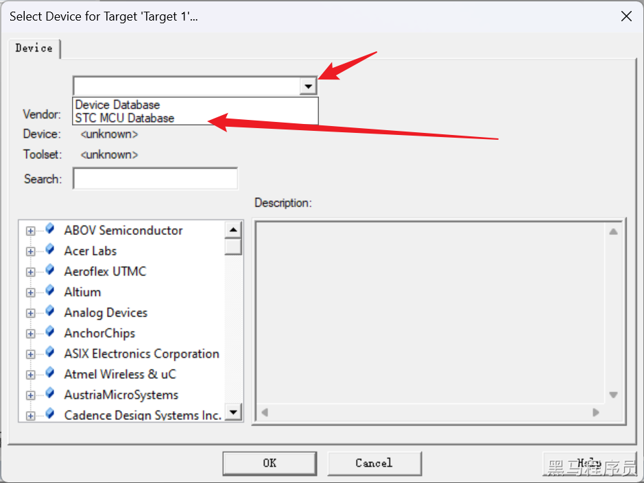</p><ol list="u01588b6b" start="3"><li data-lake-id="uac9243ec" fid="u98ac34b4" id="uac9243ec"><span data-lake-id="u590dca03" id="u590dca03">可通过搜索框搜索到stc相关芯片信息</span></li></ol><p data-lake-id="u1c1877e9" id="u1c1877e9" style="padding-left: 2em">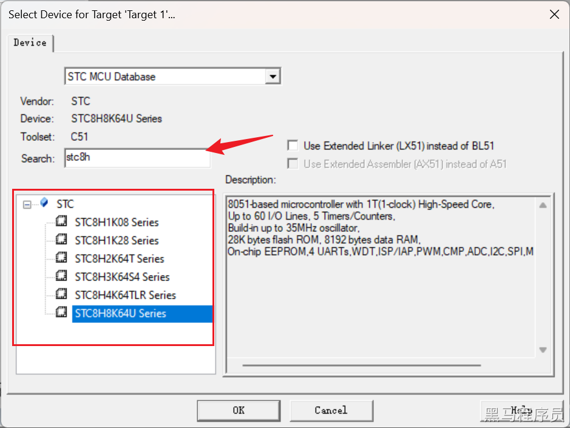</p><p data-lake-id="u8e1e1396" id="u8e1e1396" style="padding-left: 2em"><br/></p><h2 data-lake-id="EhSPh" id="EhSPh"><span data-lake-id="u6a9d17ed" id="u6a9d17ed">工具配置</span></h2><h3 data-lake-id="OJjZ6" id="OJjZ6"><span data-lake-id="uc3bf223a" id="uc3bf223a">STC_ISP烧录工具配置</span></h3><p data-lake-id="udeda69b7" id="udeda69b7"><span data-lake-id="u706d5160" id="u706d5160">配置关闭模式</span></p><p data-lake-id="u1ef6e9d7" id="u1ef6e9d7">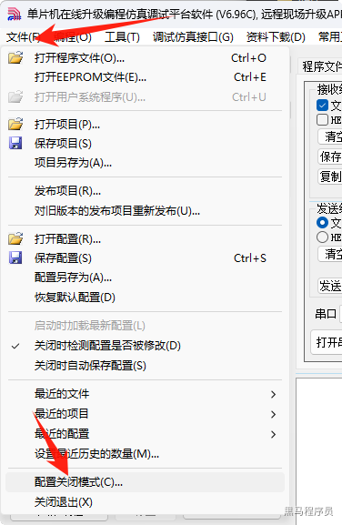</p><p data-lake-id="ud1b2bd92" id="ud1b2bd92">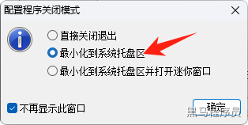</p><h3 data-lake-id="kMCCv" id="kMCCv"><span data-lake-id="ubeb6d648" id="ubeb6d648">Keil支持中文注释</span></h3><p data-lake-id="u43ab407a" id="u43ab407a"><span data-lake-id="ud41963fd" id="ud41963fd">选择GB2312编码</span></p><p data-lake-id="ub4f3c13d" id="ub4f3c13d">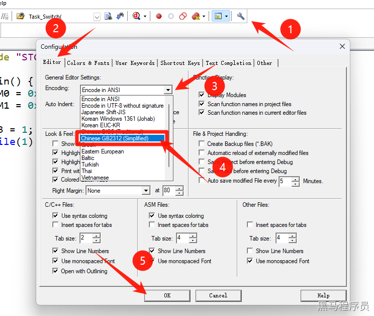</p><h3 data-lake-id="O6Mmd" id="O6Mmd"><span data-lake-id="uee32ab69" id="uee32ab69">Keil字体字号设置</span></h3><ul list="uee68a880"><li data-lake-id="u23dc6a82" fid="u4ef7dffd" id="u23dc6a82"><span data-lake-id="u7aefdb47" id="u7aefdb47">选择字体为Consolas, 字号16</span></li><li data-lake-id="uc1966c90" fid="u4ef7dffd" id="uc1966c90"><span data-lake-id="u95b6b859" id="u95b6b859">字体的设置只能在</span><code data-lake-id="u4f5f6c3e" id="u4f5f6c3e"><span data-lake-id="uba15db00" id="uba15db00">ANSI</span></code><span data-lake-id="uee8297ff" id="uee8297ff">或</span><code data-lake-id="u0ba2b018" id="u0ba2b018"><span data-lake-id="ufb5f725f" id="ufb5f725f">UTF-8 without signature</span></code><span data-lake-id="u4b06906a" id="u4b06906a">文件编码下生效</span></li></ul><p data-lake-id="ubcc1d484" id="ubcc1d484">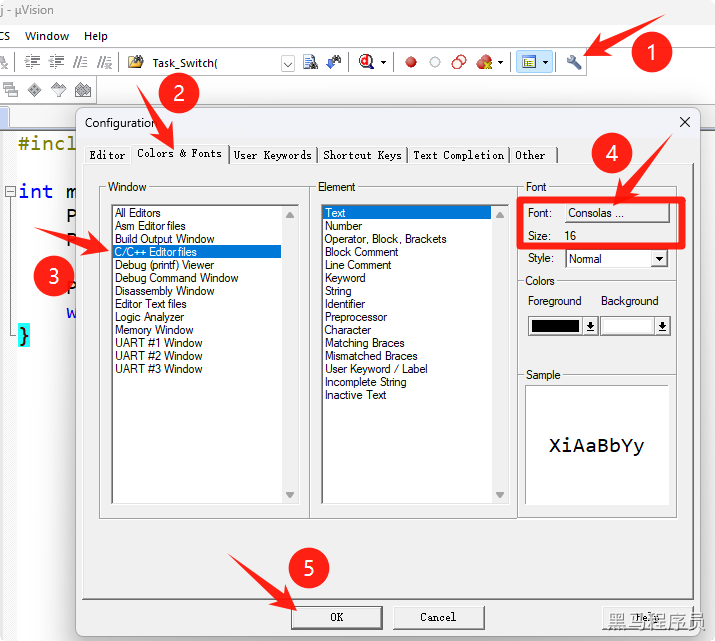</p><p data-lake-id="ub0a883d4" id="ub0a883d4"><br/></p><h3 data-lake-id="H7Z5i" id="H7Z5i"><span data-lake-id="u0b755cbc" id="u0b755cbc">Keil配置注释快捷键</span></h3><p data-lake-id="u9d8a541c" id="u9d8a541c"><span data-lake-id="u48c33840" id="u48c33840">配置注释快捷键</span></p><h3 data-lake-id="vzsTi" id="vzsTi">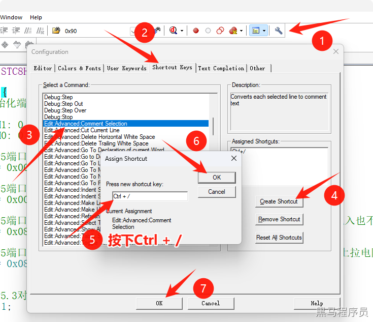</h3><p data-lake-id="u66a84eb4" id="u66a84eb4"><span data-lake-id="u060e8bc1" id="u060e8bc1">配置取消注释快捷键：</span></p><p data-lake-id="u9c005d1b" id="u9c005d1b">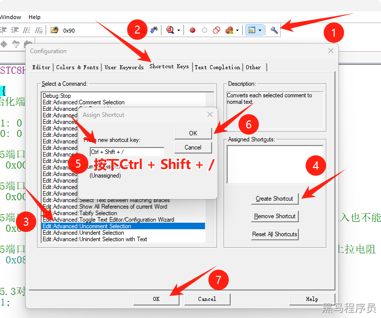</p>